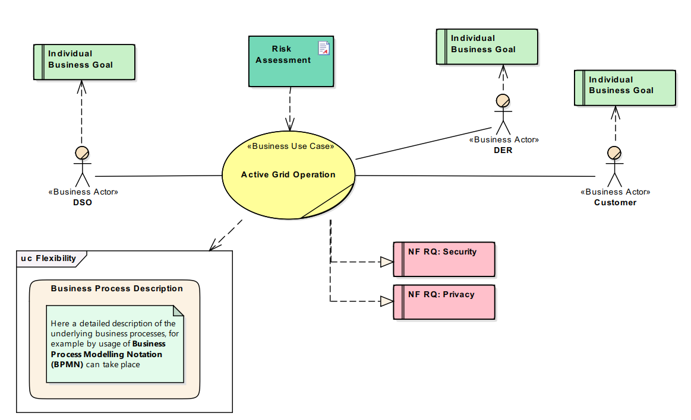
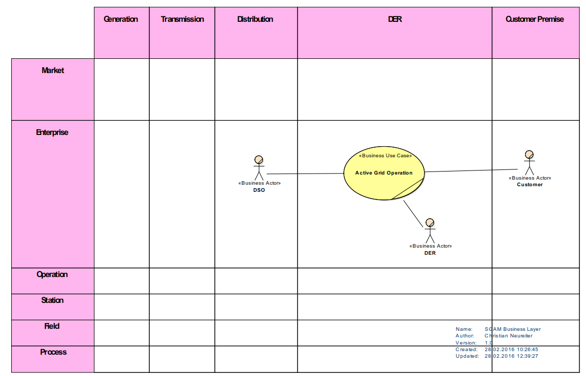

System Analysis - Business Layer
The very first task when architecting a system is to conduct the Business Analysis task as part of the System Analysis Phase. This task aims at identification of the motivation behind a certain system to be built, the stakeholders involved and their particular interests. Figure 1 demonstrates the utilization of the developed DSL in combination with existing modeling languages (e.g., BPMN) to describe a particular business case.

Figure 1. Business Case Analysis.
The intention of the given scenario is to cope with energy peaks on basis of an active grid operation. Basically, the Distribution System Operator (DSO) wants to control the injection from Distributed Energy Resources (DER) and the energy consumption by Customers. Thus, the parties involved are introduced as the Business Actors DSO, DER and Customer. Each of these actors has its own interests which are denoted as Business Goals. The concerning model elements cover a detailed description of the individual goals.
In order to balance the interests between the individual stakeholders, the Business Case (BC) Active Grid Operation is introduced. This model element can cover more detailed considerations of underlying aspects. For example, a Strength-Weakness-Opportunity-Threat (SWOT) analyses or individual business processes, such as the workflow for integration of new participants can be covered by this description. The underlying considerations can be noted in arbitrary ways, for example simply by using plain text, attaching documents or in a more formal way by utilization of Business Process Modeling Notation (BPMN). Figure 1 indicates the integration of such information as in the lower left corner of the picture a preview on the diagram "behind" the BC is included.
Besides the identification and description of the BC it is of special interest to also consider the associated risk. Considerations for a domain specific risk assessment can be found for example in
[1] or
[2]. However, in general the introduced risk is based on potential impact and likelihood (for a successful attack). In this early stage when no architectural solution yet exists, the likelihood is rather hard to determine whereas first considerations in terms of potential impact already can be made. In the given example, the risk assessment has been done by utilization of an external document template that is associated with the Business Case.
On basis of the risk assessment a first set of dependability requirements can be derived. In Figure 1 this is indicated by one particular security and one privacy requirement. These requirements typically will span a tree within the model that continuously is refined with every development phase. For decomposition of these requirements the utilization of SysML Requirement Diagrams is a well-known approach. The SGAM Toolbox used to create this example is an extension of an existing modeling tool and thus supports the integration with standardized modeling concepts such as SysML. Furthermore, also integration with external tools such as Requirements Management Tools (RMT) is possible. However, as this example focuses on the overall methodology, it does not provide a more granular description here.
As can be seen, specific considerations on security and privacy already take place in the very beginning. This is of great importance as privacy and security requirements can be identified as architectural drivers and thus have impact on architectural decisions to be made.
To bring the considerations made in a domain specific context the created model can be aligned within the SGAM by placing it within the SGAM Business Layer as depicted in Figure 2. This can be of importance to identify eventually existing regulatory constraints for particular domains. If so, the regulatory instance together with its requirements can be added as additional Business Actor. However, as the given example focuses only on the methodology, regulatory constraints are not considered here in more detail.

Figure 2. SGAM Business Layer.